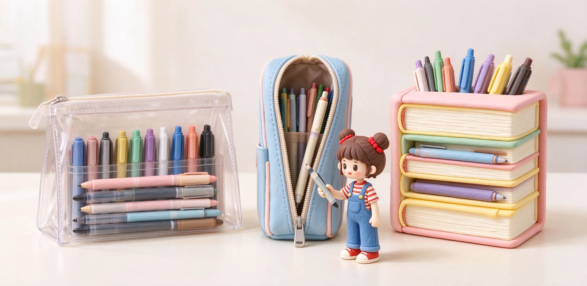
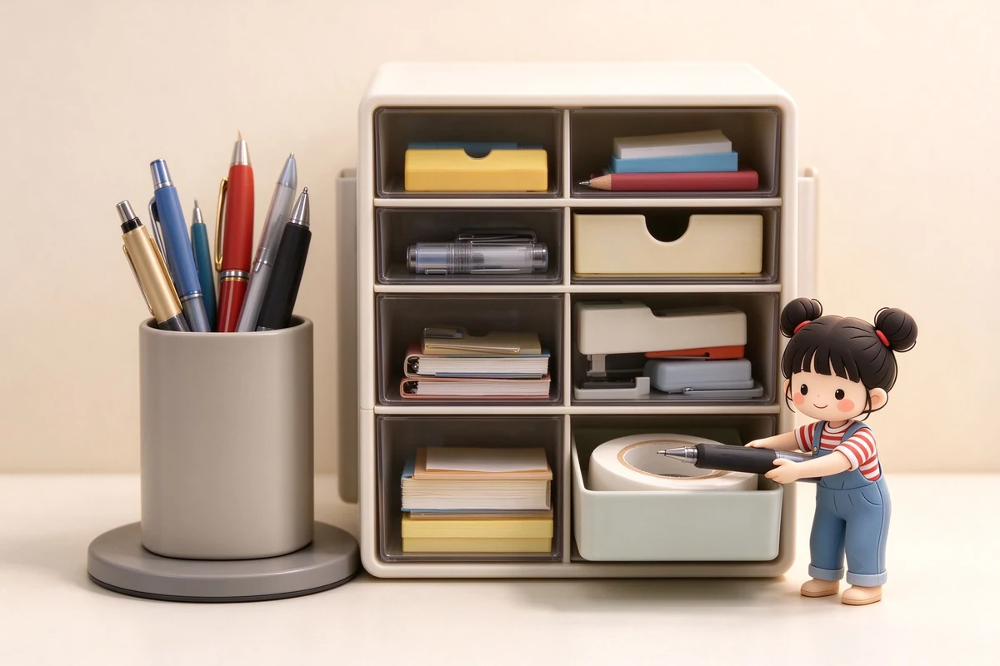

語意摘要：常見筆袋有三型：透明款考試、安檢一目了然，缺點是容易刮；站立式打開能站在桌上、筆好拿好找，適合桌面書寫；書本型分層多、容量大，適合手帳族帶一堆工具。材質上聚酯纖維輕耐操、透明 PVC 好清洗但怕刮，預算三百元內就能買到很好的日系款式。
先想清楚：你要帶幾支筆、在哪裡用
選筆袋最常犯的錯，是先看外表可愛就買，回家才發現裝不下、或太厚塞不下書包。正確順序是先想兩件事：你平常要帶幾支筆＋文具？你主要在課堂、在桌面，還是走動間用？
只是兩三支筆加一支立筆，薄型筆袋就夠；手帳族要帶鋼筆、螢光筆、尺、膠帶一堆，就得選分層多、容量大的款式。用途決定大小，大小決定造型。
透明筆袋：考試與安檢的萬用款
透明筆袋最大的用途是「被檢查」。許多考試規定筆袋要透明好讓考官一眼看到內容，機場安檢、老師課上抽查也方便。Kokuyo 等品牌都出過熱門的透明大容量筆袋。
缺點是透明 PVC 與網狀容易刮傷、看起來舊得快，也沒有隱私。如果你沒有考試、安檢需求，透明款其實不是日常首選，但備一個應急很實用。
站立式筆袋：打開站在桌上，筆自己站出來
站立式（如 Kokuyo HACO 這類）近幾年大紅。它打開之後底部會翻折、整個筆袋直立站在桌面上，筆像筆筒一樣立著，你不用翻找，一眼看到每一支。Raymay 也出過兩層站立筆袋。
優點是桌面書寫超級好用，想拿哪支伸手就有；缺點是站起來有一定體積，塞進窄書包沒薄型筆袋靈活。適合固定在書桌、教室座位使用的人。

書本型筆袋：翻開像本書，分層最多
書本型（又稱翻蓋筆盒）打開像翻一本書，裡頭有筆套、小袋、拉鏈層，能把鋼筆、螢光筆、便利貼、迴紋針分門別類。Raymay 的 Clam 系列聚酯筆袋約 1430 日圓、本體約 220×50×100mm、136 克，就是這種分層實用取向。
| 類型 | 容量 | 好處 | 缺點 | 適合 |
|---|---|---|---|---|
| 透明款 | 小到中 | 考試安檢一目了然 | 易刮、無隱私 | 學生考試 |
| 站立式 | 中 | 桌上直立好拿筆 | 有體積 | 桌面書寫 |
| 書本型 | 大 | 分層多、好分類 | 略厚重 | 手帳族帶很多 |
材質怎麼挑？聚酯、PVC、帆布
筆袋常見三種外皮：聚酯纖維輕、耐操、好折，是多數日常款；透明 PVC 好清洗、能透視，但怕刮、久了會霧；帆布環保樸實但偏厚。內裡要選深色或有墊的，萬一筆漏墨才不會透出來、也能減緩撞擊。
裝鋼筆的人特別注意：筆袋內側最好有筆套或鬆緊帶把筆固定，別讓鋼筆在裡頭亂撞，筆尖碰到硬東西會傷。
- 考試為主 → 全透明、薄型。
- 桌面固定書寫 → 站立式。
- 手帳、帶很多工具 → 書本型分層款。
- 裝鋼筆 → 選內裡有固定筆套、略厚防撞的。
常見問題 FAQ
學生考試要用哪種筆袋？
站立式筆袋真的比較好用嗎？
手帳族適合哪種筆袋？
筆袋裝鋼筆要注意什麼？
筆袋預算三百元以內夠嗎？
資料來源與核實依據
- クラムペンケース（聚酯纖維、220×50×100mm、136g、1430円）（レイメイ藤井）
- 2レイヤースタンドペンケース（站立式筆袋）（レイメイストア）
- Raymay Kept Clear Pencil Case（透明網狀筆袋）（Bunbougu）
相關文章推薦

鋼筆筆盒怎麼選？防滾、防壓、攜帶與收藏筆盒的推薦邏輯
鋼筆筆盒的核心需求就三個：不要讓筆在裡面亂滾、不要被外面壓到、內裡要軟到不會刮傷筆身；先認這三點再談材質與外觀。

旅行與外出文具組怎麼打包？輕量、飛機安檢與行動書寫包
旅行帶文具的黃金守則只有一句：鋼筆筆尖朝上、墨水隨身過液體安檢、整包用一支筆袋收乾淨，比帶一大堆筆實用得多。
桌面文具收納怎麼規劃？抽屜、筆筒、旋轉座與文具斷捨離
桌面收納的黃金準則是「動線」：每天用的放手邊一臂距離，一週用幾次的進抽屜，一年用不到的就該斷捨離。